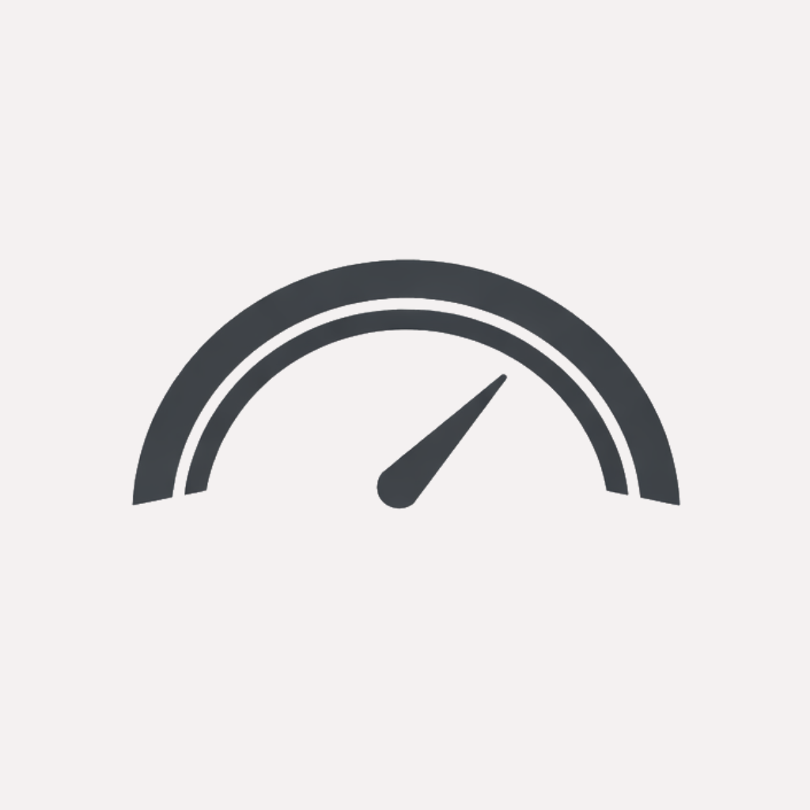
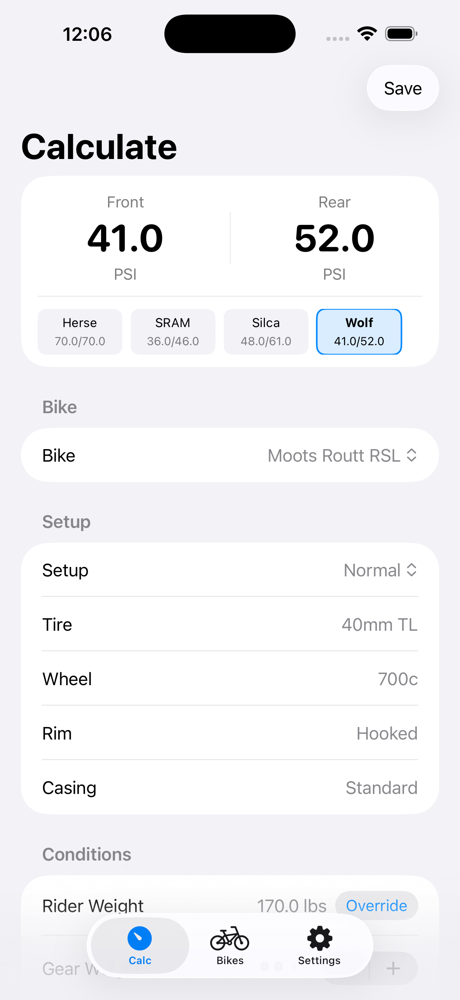

Sidewall
Precision tire pressure calculator built for cyclists who care about how their bike feels on the road, gravel, or trail.

Precision tire pressure calculator built for cyclists who care about how their bike feels on the road, gravel, or trail.
Road, Gravel, Triathlon, and MTB categories with category-specific weight distribution defaults. E-bike support with automatic adjustments.
Multiple wheel/tire setups per bike. 700c, 650b, 29", 27.5", and 26" wheel sizes. Tubeless, tubed, and tire insert support.
Surface conditions, wet toggle, speed category, and temperature-aware calculations. Session weight override for gear.
Hooked and hookless rim guidance with ETRTO max enforcement. Visual clamping indicators and warning system.
Fully offline functionality. Private iCloud sync with no accounts and no tracking. Your data stays yours.
View all calculation engines simultaneously with pressure deltas. Find the perfect pressure for your style.
Compare pressure recommendations from multiple trusted calculation models.
Based on the 15% tire deflection principle with speed category optimization. Best for road and gravel where efficiency matters.
Discipline-specific coefficients with rim internal width calculations. Consistent recommendations across riding styles.
Optimized for MTB/gravel with lower pressures. E-Bike support and temperature adjustment using ideal gas law.
Classic foundational research - the "15% drop" originator. Simple weight-based formula as a baseline reference.
Designed for hookless rims with a conservative approach and strict ETRTO limits.
Jan Heine's low-pressure philosophy emphasizing comfort and suspension loss reduction.
Algorithm names reference publicly documented pressure calculation methods. Silca, Wolftooth, SRAM, ENVE, and René Herse are registered trademarks of their respective owners. This app is not affiliated with or endorsed by these companies.
Stop guessing your tire pressure. Get precise, ride-ready PSI based on your exact setup.